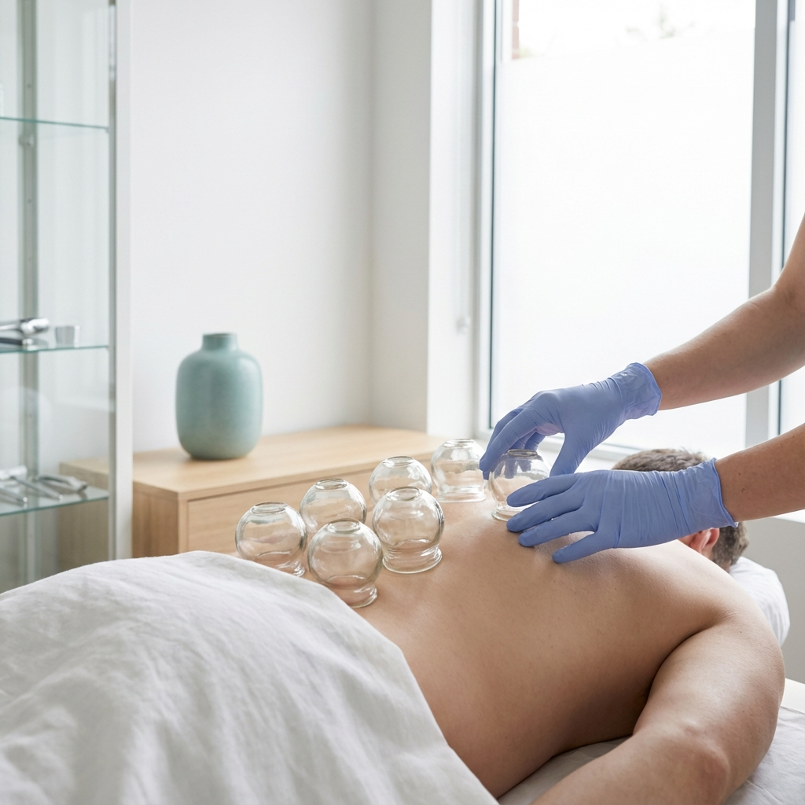

Prof. Dr. Muharrem Kıskaç uzmanlığında, steril klinik ortamında hacamat tedavisi ile sağlığınıza doğal bir dokunuş yapın.
Hacamat (Kupa Terapisi), binlerce yıllık geçmişe sahip, kan dolaşımını hızlandırmak, kılcal damarlardaki tıkanıklıkları açmak ve vücuttaki toksinleri (ağır metaller, serbest radikaller) uzaklaştırmak amacıyla yapılan geleneksel bir tedavi yöntemidir.
Modern tıbbi yaklaşımla, hijyenik koşullarda ve uzman hekim kontrolünde yapıldığında bağışıklık sistemini güçlendirir ve vücudun doğal iyileşme mekanizmalarını harekete geçirir.
Vücudumuzda biriken toksinler zamanla yorgunluk, ağrı ve hastalıklara yol açabilir. Hacamat, bu yükten kurtulmanın en doğal yoludur.
Düzenli yapılan hacamat tedavisinin kanıtlanmış birçok faydası bulunmaktadır.
Kanı temizler, ağır metalleri ve toksinleri vücuttan atar.
Bilimsel Detaylar →Bağışıklık sistemini uyararak direncini artırır, hastalıklara karşı korur.
Bilimsel Detaylar →Kronik yorgunluğu giderir, vücuda enerji verir ve zihni açar.
Bilimsel Detaylar →Migren, boyun ve sırt ağrısı gibi kronik ağrıların hafiflemesine yardımcı olur.
Bilimsel Detaylar →Kan dolaşımını ve lenfatik akışı düzenleyerek organların iyi beslenmesini sağlar.
Bilimsel Detaylar →Sinir sistemini rahatlatır, stres ve anksiyete seviyelerini düşürür.
Bilimsel Detaylar →Sağlığınız için ilk adımı atın. Detaylı bilgi ve randevu için bize ulaşın.